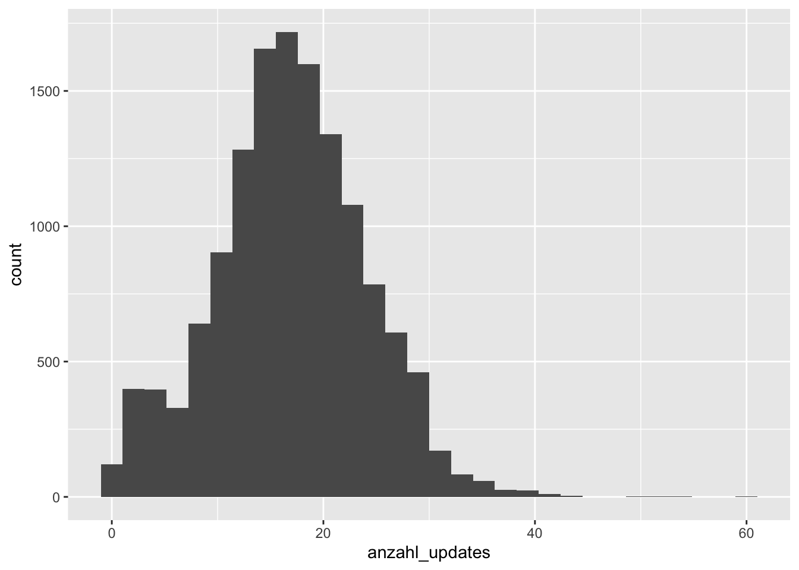
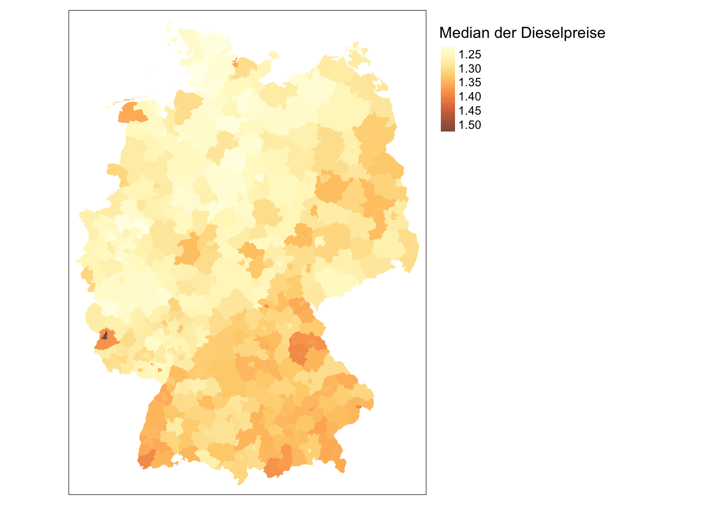

Sitzung 18 Join und group
18.1 Vorbereitung
Für diese Lektion brauchen wir folgende Pakete:
library(tidyverse)
library(sf)
library(tmap)18.2 Aufgabe
Ziel soll sein, eine Deutschlandkarte mit Tankstellenpreisen für Diesel zu erstellen.
18.3 Daten einlesen
Das Tankerkönig
-Projekt veröffentlicht aktuelle Tankstellenpreise über eine API, und stellt historische Preise hier bereit: https://dev.azure.com/tankerkoenig/_git/tankerkoenig-data
Wir laden die Dateien für prices und stations von einem Tag (hier: 26.5.2019) herunter und speichern sie im Unterordner resources des Projektordners.
Dann können wir sie einlesen:
preise <- read_csv("resources/2019-05-26-prices.csv")
preise## # A tibble: 231,174 x 8
## date station_uuid diesel e5 e10 dieselchange e5change
## <dttm> <chr> <dbl> <dbl> <dbl> <dbl> <dbl>
## 1 2019-05-25 22:01:06 51e171d0-1a… 1.37 1.58 1.56 1 1
## 2 2019-05-25 22:02:06 8a796af1-8d… 1.32 1.56 1.54 1 1
## 3 2019-05-25 22:02:06 2d658127-11… 1.28 1.52 0 0 1
## 4 2019-05-25 22:03:06 904d3a45-df… 1.32 1.54 1.52 1 1
## 5 2019-05-25 22:03:06 a98ed5d0-26… 1.34 1.57 1.55 1 1
## 6 2019-05-25 22:04:06 7671d5ad-4c… 1.30 1.54 0 1 1
## 7 2019-05-25 22:04:06 44fa4d12-55… 1.34 1.58 1.56 1 1
## 8 2019-05-25 22:04:06 da9abcda-32… 1.38 1.52 1.50 0 1
## 9 2019-05-25 22:04:06 bcba0c2b-fb… 1.35 1.55 1.53 0 1
## 10 2019-05-25 22:04:06 00061000-00… 1.20 1.48 1.46 1 1
## # … with 231,164 more rows, and 1 more variable: e10change <dbl>18.4 Überblick verschaffen
Beim nähreren Betrachten fällt auf, dass im Datensatz preise 231.174 Zeilen enthalten sind, in stations nur 15.668. Das liegt daran, das für jede Station mehrere Preisupdates im Datensatz preise stehen, jedoch nur einmal die gleichbleibenden Informationen (Name, Marke, Adresse, Koordinaten) in stations.
Beide Datensätze sind über einen eindeutigen „Key“ verbunden: In preise heißt er station_uuid, in stations einfach nur uuid.
Um ein besseres Gefühl für den Datensatz zu bekommen, könnten wir uns z. B. anschauen, zu welcher Uhrzeit wie viele Preise aktualisiert wurden:
ggplot(preise) +
geom_histogram(aes(x = date))
18.5 Zusammenfassen
Eine weitere Frage könnte sein: Wie sieht die Verteilung der Anzahl der Preisupdates je Tankstelle aus? Hierfür müssen wir den Datensatz preise anhand der Spalte station_uuid zusammenfassen und die Einträge zählen. Das geht mit group_by() und summarize():
preise %>%
group_by(station_uuid) %>%
summarize(anzahl_updates = n()) %>%
ggplot() +
geom_histogram(aes(x = anzahl_updates))
Um unserem Ziel der Dieselkarte etwas näher zu kommen, sollten wir aber nicht die Anzahl der Updates zusammenfassen, sondern den Dieselpreis.
Aber nach welchem Schema?
Einfach nur den Durchschnitt (mit mean()) zu nehmen, könnte das Bild verfälschen: Man stelle sich z. B. vor, ein besonders teurer (oder günstiger) Preis sei nur wenige Sekunden gültig gewesen.
Wir orientieren uns einfach an der Börse und nehmen einfach den letzten gültigen Preis (wie der Aktienwert bei Börsenschluss).
Dafür müssen wir den Datensatz erst mit arrange() chronologisch sortieren, dann entsprechend gruppieren und mit last() zusammenfassen:
preise %>%
arrange(date) %>%
group_by(station_uuid) %>%
summarize(dieselpreis = last(diesel),
e5preis = last(e5),
e10preis = last(e10)) ->
preise_nach_tankstelle
preise_nach_tankstelle
## # A tibble: 13,701 x 4
## station_uuid dieselpreis e5preis e10preis
## * <chr> <dbl> <dbl> <dbl>
## 1 00006210-0037-4444-8888-acdc00006210 1.33 1.55 1.53
## 2 00016899-3247-4444-8888-acdc00000007 1.31 1.53 1.51
## 3 00060001-d387-4444-8888-acdc00000001 1.37 1.62 1.60
## 4 00060009-3adf-4444-8888-acdc00000001 1.35 1.64 1.62
## 5 00060014-b0d9-4444-8888-acdc00000002 1.32 1.61 1.59
## 6 00060015-0090-4444-8888-acdc00000090 1.27 1.52 1.50
## 7 00060016-ed96-4444-8888-acdc00000001 1.35 1.57 1.55
## 8 00060034-0011-4444-8888-acdc00000011 1.37 1.61 1.59
## 9 00060051-533e-75a1-87f9-8a9f00060051 1.25 1.50 1.48
## 10 00060055-0001-4444-8888-acdc00000001 1.26 1.53 1.51
## # … with 13,691 more rows18.6 Verschneiden
Jetzt haben wir für jede Station nur noch eine Zeile mit den Preisen.
Um das zu kartieren, fehlen noch die Informationen zu den Tankstellen. Dafür laden wir auch den stations-Datensatz für den richtigen Tag herunter und importieren ihn in R:
tankstellen <- read_csv("resources/2019-05-26-stations.csv")
tankstellen## # A tibble: 15,668 x 11
## uuid name brand street house_number post_code city latitude longitude
## <chr> <chr> <chr> <chr> <chr> <chr> <chr> <dbl> <dbl>
## 1 0e18… OIL!… OIL! Evers… <NA> 80999 Münc… 48.2 11.5
## 2 ad81… bft … bft Godes… 55 53175 Bonn 50.7 7.14
## 3 44e2… bft … <NA> Schel… 53 36304 Alsf… 50.8 9.28
## 4 1a8e… Hess… Hess… Frank… 65 61279 Gräv… 50.4 8.46
## 5 0050… star… STAR Leipz… 11 06217 Mers… 51.4 12.0
## 6 d435… ROSD… Shell A7 GÖ… <NA> 37124 Rosd… 51.5 9.88
## 7 88a2… AVIA… AVIA Burgs… 8 63637 Joss… 50.2 9.48
## 8 f0e9… Aral… ARAL Eicke… 357 41063 Mönc… 51.2 6.45
## 9 0050… star… STAR Celle… 55 29303 Berg… 52.8 9.97
## 10 8e47… Aral… ARAL Crail… 32 74532 Ilsh… 49.2 9.93
## # … with 15,658 more rows, and 2 more variables: first_active <dttm>,
## # openingtimes_json <chr>Wir verschneiden mit inner_join() unter Angabe der relevanten Spaltennamen und wählen die Spalten aus, mit denen wir weiterarbeiten wollen:
inner_join(preise_nach_tankstelle, tankstellen,
by = c("station_uuid" = "uuid")) %>%
select(dieselpreis, e5preis, e10preis, name, brand, latitude, longitude) ->
preise_geo
preise_geo
## # A tibble: 13,700 x 7
## dieselpreis e5preis e10preis name brand latitude longitude
## <dbl> <dbl> <dbl> <chr> <chr> <dbl> <dbl>
## 1 1.33 1.55 1.53 Beducker - Quali… Beducker 48.6 10.9
## 2 1.31 1.53 1.51 Röttenbach BFT Pickel… 49.7 10.9
## 3 1.37 1.62 1.60 Haisch Mineralöl… TankCenter… 48.0 7.59
## 4 1.35 1.64 1.62 Tank-Kontor Wilh… <NA> 47.9 9.42
## 5 1.32 1.61 1.59 Tank-Kontor Baie… <NA> 47.8 9.65
## 6 1.27 1.52 1.50 Schindele, Lochb… <NA> 47.7 9.53
## 7 1.35 1.57 1.55 bft-Tankstelle H… BFT 48.1 7.78
## 8 1.37 1.61 1.59 EXTROL Tank- & W… EXTROL 48.0 7.79
## 9 1.25 1.50 1.48 Wingenfeld Energ… Wingenfeld… 50.8 10.2
## 10 1.26 1.53 1.51 Wilhlem Heim GmbH Oel - Heim 48.6 9.03
## # … with 13,690 more rowsinner_join hat die Besonderheit, dass nur Zeilen im kombinierten Datensatz übrigbleiben, deren Key in beiden Datensätzen gefunden wurde. Mit left_join würden hier alle Preise behalten werden (und die fehlenden Koordinaten mit NA ergänzt), mit right_join würden alle Stationen behalten werden (und fehlende Preise mit NA ergänzt). full_join löscht gar keine Informationen.
18.7 Kartieren
Den georeferenzierten Datensatz der Preise wandeln wir in eine Simple Feature Collection um:
preise_geo %>%
st_as_sf(coords = c("longitude", "latitude")) -> preise_sfggplot() kartiert so einen großen Datensatz nur langsam. Wir nehmen stattdessen das Paket tmap() zur Hand, das mit einer ähnlichen Grammatik funktioniert.
Interaktive Karten lassen sich mit tmap produzieren, wenn die Option
tmap_mode("view")gesetzt ist. Aus technischen Gründen wird an dieser Stelle im Skript darauf verzichtet und wir bleiben beim plot-Modus:
tm_shape(preise_sf) +
tm_dots()Zwei Koordinaten sind quatsch! Wir finden ihre ungefähren Werte mit summary:
summary(preise_geo$longitude)
## Min. 1st Qu. Median Mean 3rd Qu. Max.
## 5.901 8.021 9.275 9.607 11.058 97.364Und filtern sie raus, und wiederholen die Umwandlung (diesmal auch mit CRS)
preise_geo %>%
filter(longitude < 80) %>%
st_as_sf(coords = c("longitude", "latitude")) %>%
st_set_crs(4326) -> preise_sfDann mappen wir nochmal:
tm_shape(preise_sf) +
tm_dots("dieselpreis", style = "cont")Schon ganz hübsch, aber die Skala wird nun verzerrt durch sehr teure Autobahntankstellen einerseits, und falsche Null-werte andererseits:
summary(preise_sf$dieselpreis)
## Min. 1st Qu. Median Mean 3rd Qu. Max.
## 0.000 1.249 1.289 1.290 1.329 1.67918.8 Choroplethen
Eine Lösung wäre, die Daten auf Kreisebene zusammenzufassen, und zwar anhand ihres Medians. Damit würden diese Ausreißer keine Role mehr spielen.
Das eurostat-Paket macht es einfach, diese Geodaten einzulesen. NUTS3 ist die Ebene der Stadt- und Landkreise bzw. ihrer europäischen Equivalente.
kreise <- eurostat::get_eurostat_geospatial(nuts_level = 3) %>%
filter(CNTR_CODE == "DE")Mal schauen wie es aussieht:
tm_shape(kreise) +
tm_polygons()18.9 Räumliches Verschneiden
mit st_join werden Datensätze nicht mit einem Key verschnitten, sondern anhand ihrer Geolokation. Dann können wir wieder ganz normal group_by und summarise verwenden:
st_join(kreise, preise_sf) %>%
group_by(NUTS_ID) %>%
summarise(dieselpreis = median(dieselpreis),
e5preis = median(e5preis),
e10preis = median(e10preis)) -> preise_kreiseUnd so könnte vielleicht ein vorläufiges Ergebnis aussehen:
tm_shape(preise_kreise) +
tm_fill("dieselpreis",
title = "Median der Dieselpreise",
style = "cont",
alpha = 0.8) +
tm_layout(legend.outside = TRUE)